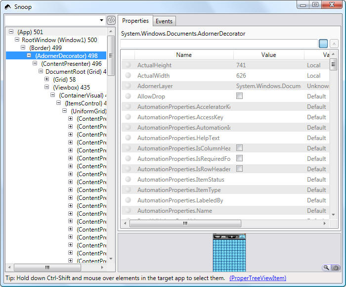
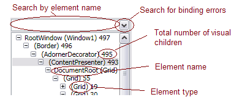
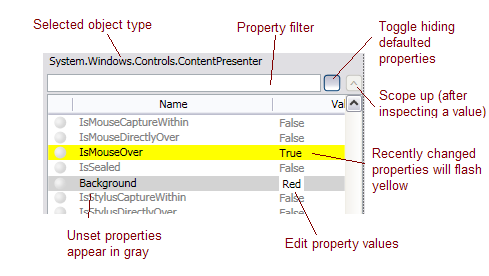
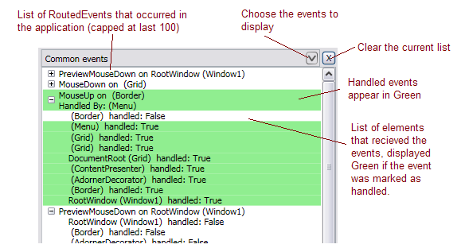
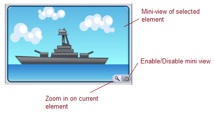
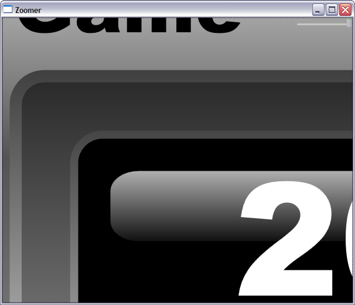
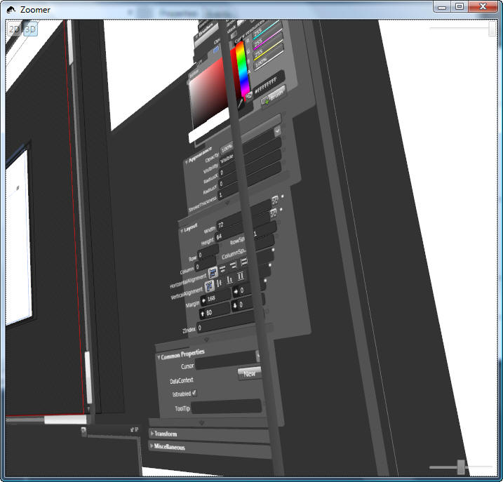

Snoop (a WPF utility)
News
Updated (after a long hiatus) to include .NET 3.5 support and a couple of extra tweaks and styling.
There is a remaining issue where I broke the property value editing (sorry!), but hopefully that will be fixed soon.
What
A random utility made to simplify visual debugging of WPF applications at runtime. It's basically a collection of things that may have seemed useful at one time or another with the common goal of making it easier to track down bugs in WPF applications.
This is not an official tool, just a utility that was found useful and added to when functionality was needed. It's provided in the hopes of helping others.
Usage
Run Snoop.exe. Once it has started it will display a list of all running WPF applications. If your target app is not running yet, just launch it then refresh the list with the Refresh button or by pressing F5. Snoop will automatically find all WPF processes running on the machine to attach to.
Once the application to be snooped is selected, click the Snoop icon ()to launch Snoop.
Building
Snoop.csproj can be built using VS Express, but the complete solution requires the C++ compiler found in full VS. The C++ portion of the solution is provided pre-built and has no WPF dependencies, so you should not have to rebuild it to run.
Primary View
Graph of the visual tree on the left, list of properties on the selected element in the center, common events & preview area on the right

The selected element will highlight with a red adorner in the target application. Another way of finding elements in the tree is to hold down Ctrl-Shift and mouse over the target application. This will move the selection to the element under the mouse.
Tree View

Navigate the visual tree using this view, F5 will refresh the list of elements. The text on the left is the element name, in brackets is it's type, and on the right is the number of child elements it contains. Number of child elements is quite useful when focusing on performance and trying to keep the element count to a minimum.
If you're tired of searching through debug spew for binding errors, they can be searched for using the drop down beside the filter box.
Property Grid

Lists all the properties on the currently selected element. Writable properties may be edited in the value area. Also displays where the property was picked up from.
Right click will show options to Delve (inspect the value). If the property is a binding then the binding and expression can also be inspected. Useful for debugging those binding errors.
RoutedEvents View

Preview Area (off by default, for perf)

Zoom View (accessed from zoom button in Preview Area)

Use mouse wheel to zoom, double-click to reset zoom. Slider at the top changes the brightness of the background color. +/- keys may also be used to zoom the view.
3D Zoom View (courtesy of Eric Stollnitz)

From the Zoom View window, there is a 3D button will put the view into a 3D view mode where the UI is exploded and will show how the UI is composited. The example above is showing the deep nesting in Blend's property inspector.
Special thanks to AdrianMa for AvalonSpy which provided the inspiration and is a great tool of it’s own, and KennyY for Sparkle’s ‘Live Tree Statistics’ feature, the granddaddy of them all.